Chapter 7: Work and Kinetic Energy¶
Introduction¶
In this chapter, we discuss some basic physical concepts involved in every physical motion in the universe, going beyond the concepts of force and change in motion, which we discussed in Motion in Two and Three Dimensions and Newton’s Laws of Motion. These concepts are work, kinetic energy, and power. We explain how these quantities are related to one another, which will lead us to a fundamental relationship called the work-energy theorem. In the next chapter, we generalize this idea to the broader principle of conservation of energy.
The application of Newton’s laws usually requires solving differential equations that relate the forces acting on an object to the accelerations they produce. Often, an analytic solution is intractable or impossible, requiring lengthy numerical solutions or simulations to get approximate results. In such situations, more general relations, like the work-energy theorem (or the conservation of energy), can still provide useful answers to many questions and require a more modest amount of mathematical calculation. In particular, you will see how the work-energy theorem is useful in relating the speeds of a particle, at different points along its trajectory, to the forces acting on it, even when the trajectory is otherwise too complicated to deal with. Thus, some aspects of motion can be addressed with fewer equations and without vector decompositions.
7.1 Work¶
Learning Objectives
By the end of this section, you will be able to:
- Represent the work done by any force
- Evaluate the work done for various forces
In physics, work is done on an object when energy is transferred to the object. In other words, work is done when a force acts on something that undergoes a displacement from one position to another. Forces can vary as a function of position, and displacements can be along various paths between two points. We first define the increment of work dW done by a force \(\overrightarrow{\mathbf{F}}\) acting through an infinitesimal displacement \(d\mathbf{\vec{r}}\) as the dot product of these two vectors:
equation callout
Then, we can add up the contributions for infinitesimal displacements, along a path between two positions, to get the total work.
Work Done by a Force
The work done by a force is the integral of the force with respect to displacement along the path of the displacement:
The vectors involved in the definition of the work done by a force acting on a particle are illustrated in Figure 7.2. While in general, Equation 7.2 requires mathematics beyond the scope of this text, in many simple situations this integral becomes a familiar integral in one variable. We will examine several such examples and restrict our discussion to these cases.
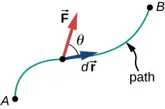
We choose to express the dot product in terms of the magnitudes of the vectors and the cosine of the angle between them, because the meaning of the dot product for work can be put into words more directly in terms of magnitudes and angles. We could equally well have expressed the dot product in terms of the various components introduced in Vectors. In two dimensions, these were the x- and y-components in Cartesian coordinates, or the r- and \(\phi\)-components in polar coordinates; in three dimensions, it was just x-, y-, and z-components. Which choice is more convenient depends on the situation. In words, you can express Equation 7.1 for the work done by a force acting over a displacement as a product of one component acting parallel to the other component. From the properties of vectors, it doesn’t matter if you take the component of the force parallel to the displacement or the component of the displacement parallel to the force—you get the same result either way.
Recall that the magnitude of a force times the cosine of the angle the force makes with a given direction is the component of the force in the given direction. The components of a vector can be positive, negative, or zero, depending on whether the angle between the vector and the component-direction is between \(0{}^{\circ}\) and \(90{}^{\circ}\) or \(90{}^{\circ}\) and \(180{}^{\circ}\), or is equal to \(90{}^{\circ}\). As a result, the work done by a force can be positive, negative, or zero, depending on whether the force is generally in the direction of the displacement, generally opposite to the displacement, or perpendicular to the displacement. The maximum work is done by a given force when it is along the direction of the displacement (\(\cos\:\theta=\pm 1\)), and zero work is done when the force is perpendicular to the displacement (\(\cos\:\theta=0\)).
The units of work are units of force multiplied by units of length, which in the SI system is newtons times meters, \(\text{N}\cdot\text{m.}\) This combination is called a joule, for historical reasons that we will mention later, and is abbreviated as J. In the English system, still used in the United States, the unit of force is the pound (lb) and the unit of distance is the foot (ft), so the unit of work is the foot-pound \((\text{ft}\cdot\text{lb}).\)
Work Done by Constant Forces and Contact Forces¶
The simplest work to evaluate is that done by a force that is constant in magnitude and direction. In this case, we can factor out the force; the remaining integral is just the total displacement, which only depends on the end points A and B, but not on the path between them:
Figure 7.3(a) shows a person exerting a constant force \(\overrightarrow{\mathbf{F}}\) along the handle of a lawn mower, which makes an angle \(\theta\) with the horizontal. The horizontal displacement of the lawn mower, over which the force acts, is \(\overrightarrow{\mathbf{d}}.\) The work done on the lawn mower is\(W=\overrightarrow{\mathbf{F}}\cdot\overrightarrow{\mathbf{d}}=Fd\:\cos\:\theta\), which the figure also illustrates as the horizontal component of the force times the magnitude of the displacement.
![Figure a shows a person pushing a lawn mower with a constant force. The displacement is a horizontal vector d pointing to the right. The force F is a vector pointing down and to the right, along the handle of the lawn mower, at an angle theta below the horizontal. The component of the force parallel to the displacement is F cosine theta. The equation W equals F d cosine theta is shown in the figure. Figure b shows a person holding a briefcase. The force F is upward. The displacement is zero. Figure c shows the person in b walking horizontally while holding the briefcase. The force F is upward, as in b. The displacement d is horizontal to the right. Theta equals ninety degrees and cosine theta equals zero.](img/cnx-uphysics-07-01-mower.webp)
Figure 7.3(b) shows a person holding a briefcase. The person must exert an upward force, equal in magnitude to the weight of the briefcase, but this force does no work, because the displacement over which it acts is zero.
In Figure 7.3(c), where the person in (b) is walking horizontally with constant speed, the work done by the person on the briefcase is still zero, but now because the angle between the force exerted and the displacement is \(90{}^{\circ}\) (\(\overrightarrow{\mathbf{F}}\) perpendicular to \(\overrightarrow{\mathbf{d}}\)) and \(\cos\:90{}^{\circ}=0\).
Example 7.1 Calculating the Work You Do to Push a Lawn Mower
How much work is done on the lawn mower by the person in Figure 7.3(a) if he exerts a constant force of 75.0 N at an angle \(35{}^{\circ}\) below the horizontal and pushes the mower 25.0 m on level ground?
Strategy
We can solve this problem by substituting the given values into the definition of work done on an object by a constant force, stated in the equation \(W=Fd\:\cos\:\theta\). The force, angle, and displacement are given, so that only the work W is unknown.
Solution
The equation for the work is
Substituting the known values gives
Significance
Even though one and a half kilojoules may seem like a lot of work, we will see in Potential Energy and Conservation of Energy that it’s only about as much work as you could do by burning one sixth of a gram of fat.
When you mow the grass, other forces act on the lawn mower besides the force you exert—namely, the contact force of the ground and the gravitational force of Earth. Let’s consider the work done by these forces in general. For an object moving on a surface, the displacement \(d\overrightarrow{\mathbf{r}}\) is tangent to the surface. The part of the contact force on the object that is perpendicular to the surface is the normal force \(\mathbf{\vec{N}}.\) Since the cosine of the angle between the normal and the tangent to a surface is zero, we have
The normal force never does work under these circumstances. (Note that if the displacement \(d\mathbf{\vec{r}}\) did have a relative component perpendicular to the surface, the object would either leave the surface or break through it, and there would no longer be any normal contact force. However, if the object is more than a particle, and has an internal structure, the normal contact force can do work on it, for example, by displacing it or deforming its shape. This will be mentioned in the next chapter.)
The part of the contact force on the object that is parallel to the surface is friction, \(\mathbf{\vec{f}}.\) For this object sliding along the surface, kinetic friction \({\mathbf{\vec{f}}}_{\text{k}}\) is opposite to \(d\mathbf{\vec{r}},\) relative to the surface, so the work done by kinetic friction is negative. If the magnitude of \({\mathbf{\vec{f}}}_{\text{k}}\) is constant (as it would be if all the other forces on the object were constant), then the work done by friction is
equation callout
where \(|l_{AB}|\) is the path length on the surface. The force of static friction does no work in the reference frame between two surfaces because there is never displacement between the surfaces. As an external force, static friction can do work. Static friction can keep someone from sliding off a sled when the sled is moving and perform positive work on the person. If you’re driving your car at the speed limit on a straight, level stretch of highway, the negative work done by air resistance is balanced by the positive work done by the static friction of the road on the drive wheels. You can pull the rug out from under an object in such a way that it slides backward relative to the rug, but forward relative to the floor. In this case, kinetic friction exerted by the rug on the object could be in the same direction as the displacement of the object, relative to the floor, and do positive work. The bottom line is that you need to analyze each particular case to determine the work done by the forces, whether positive, negative or zero.
Example 7.2 Moving a Couch
You decide to move your couch to a new position on your horizontal living room floor. The normal force on the couch is 1 kN and the coefficient of friction is 0.6. (a) You first push the couch 3 m parallel to a wall and then 1 m perpendicular to the wall (A to B in Figure 7.4). How much work is done by the frictional force? (b) You don’t like the new position, so you move the couch straight back to its original position (B to A in Figure 7.4). What was the total work done against friction moving the couch away from its original position and back again?
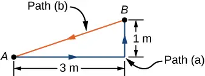
Strategy
The magnitude of the force of kinetic friction on the couch is constant, equal to the coefficient of friction times the normal force, \(f_{K}=\mu_{K}N\). Therefore, the work done by it is \(W_{\text{fr}}=-f_{K}d\), where d is the path length traversed. The segments of the paths are the sides of a right triangle, so the path lengths are easily calculated. In part (b), you can use the fact that the work done against a force is the negative of the work done by the force.
Solution
a. The work done by friction i
b. The length of the path along the hypotenuse is \(\sqrt{10}\:\text{m}\), so the total work done against friction is
Significance
The total path over which the work of friction was evaluated began and ended at the same point (it was a closed path), so that the total displacement of the couch was zero. However, the total work was not zero. The reason is that forces like friction are classified as nonconservative forces, or dissipative forces, as we discuss in the next chapter.
Check Your Understanding
Can kinetic friction ever be a constant force for all paths?
Answer
No, only its magnitude can be constant; its direction must change, to be always opposite the relative displacement along the surface.
The other force on the lawn mower mentioned above was Earth’s gravitational force, or the weight of the mower. Near the surface of Earth, the gravitational force on an object of mass m has a constant magnitude, mg, and constant direction, vertically down. Therefore, the work done by gravity on an object is the dot product of its weight and its displacement. In many cases, it is convenient to express the dot product for gravitational work in terms of the x-, y-, and z-components of the vectors. A typical coordinate system has the x-axis horizontal and the y-axis vertically up. Then the gravitational force is \(-mg\widehat{\mathbf{j}},\) so the work done by gravity, over any path from A to B, is
equation callout
The work done by a constant force of gravity on an object depends only on the object’s weight and the difference in height through which the object is displaced. Gravity does negative work on an object that moves upward (\(y_{B} \gt y_{A}\)), or, in other words, you must do positive work against gravity to lift an object upward. Alternately, gravity does positive work on an object that moves downward (\(y_{B} \lt y_{A}\)), or you do negative work against gravity to “lift” an object downward, controlling its descent so it doesn’t drop to the ground. (“Lift” is used as opposed to “drop”.)
Example 7.3 Shelving a Book
You lift an oversized library book, weighing 20 N, 1 m vertically down from a shelf, and carry it 3 m horizontally to a table (Figure 7.5). (a) How much work does gravity do on the book? (b) When you’re finished, you move the book in a straight line back to its original place on the shelf. What was the total work done against gravity, moving the book away from its original position on the shelf and back again?
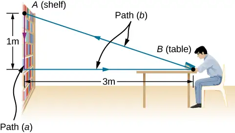
Strategy
We have just seen that the work done by a constant force of gravity depends only on the weight of the object moved and the difference in height for the path taken, \(W_{AB}=-mg(y_{B}-y_{A})\). We can evaluate the difference in height to answer (a) and (b).
Solution
a. Since the book starts on the shelf and is lifted down \(y_{B}-y_{A}=-1\:\text{m}\), we have
b. There is zero difference in height for any path that begins and ends at the same place on the shelf, so \(W=0.\)
Significance
Gravity does positive work (20 J) when the book moves down from the shelf. The gravitational force between two objects is an attractive force, which does positive work when the objects get closer together. Gravity does zero work (0 J) when the book moves horizontally from the shelf to the table and negative work (−20 J) when the book moves from the table back to the shelf. The total work done by gravity is zero \([20\:\text{J}+0\:\text{J}+(-20\:\text{J})=0].\) Unlike friction or other dissipative forces, described in Example 7.2, the total work done against gravity, over any closed path, is zero. Positive work is done against gravity on the upward parts of a closed path, but an equal amount of negative work is done against gravity on the downward parts. In other words, work done against gravity, lifting an object up, is “given back” when the object comes back down. Forces like gravity (those that do zero work over any closed path) are classified as conservative forces and play an important role in physics.
Check Your Understanding
Can Earth’s gravity ever be a constant force for all paths?
Answer
No, it’s only approximately constant near Earth’s surface.
Work Done by Forces that Vary¶
In general, forces may vary in magnitude and direction at points in space, and paths between two points may be curved. The infinitesimal work done by a variable force can be expressed in terms of the components of the force and the displacement along the path,
Here, the components of the force are functions of position along the path, and the displacements depend on the equations of the path. (Although we chose to illustrate dW in Cartesian coordinates, other coordinates are better suited to some situations.) Equation 7.2 defines the total work as a line integral, or the limit of a sum of infinitesimal amounts of work. The physical concept of work is straightforward: you calculate the work for tiny displacements and add them up. Sometimes the mathematics can seem complicated, but the following example demonstrates how cleanly they can operate.
Example 7.4 Work Done by a Variable Force over a Curved Path
An object moves along a parabolic path \(y=(0.5\:\text{m}^{-1})x^{2}\) from the origin \(A=(0,0)\) to the point \(B=(2\:\text{m,}\:2\:\text{m})\) under the action of a force \(\mathbf{\vec{F}}=(5\:\text{N/m})y\mathbf{\hat{i}}+(10\:\text{N/m})x\mathbf{\hat{j}}\) (Figure 7.6). Calculate the work done.
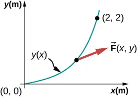
Strategy
The components of the force are given functions of x and y. We can use the equation of the path to express y and dy in terms of x and dx; namely,
Then, the integral for the work is just a definite integral of a function of x.
Solution
The infinitesimal element of work is
The integral of \(x^{2}\) is \(x^{3}\text{/}3,\) so
Significance
This integral was not hard to do. You can follow the same steps, as in this example, to calculate line integrals representing work for more complicated forces and paths. In this example, everything was given in terms of x- and y-components, which are easiest to use in evaluating the work in this case. In other situations, magnitudes and angles might be easier.
Check Your Understanding
Find the work done by the same force in Example 7.4 over a cubic path, \(y=(0.25\:\text{m}^{\text{−2}})x^{3}\), between the same points \(A=(0,0)\) and \(B=(2\:\text{m,}\:2\:\text{m}).\)
Answer
\(W=35\:\text{J}\)
One very important and widely applicable variable force is the force exerted by a perfectly elastic spring, which satisfies Hooke’s law \(\mathbf{\vec{F}}=-k\Delta\mathbf{\vec{x}},\) where k is the spring constant, and \(\Delta\mathbf{\vec{x}}=\mathbf{\vec{x}}-{\mathbf{\vec{x}}}_{\text{eq}}\) is the displacement from the spring’s unstretched (equilibrium) position (Newton’s Laws of Motion). Note that the unstretched position is only the same as the equilibrium position if no other forces are acting (or, if they are, they cancel one another). Forces between molecules, or in any system undergoing small displacements from a stable equilibrium, behave approximately like a spring force.
To calculate the work done by a spring force, we can choose the x-axis along the length of the spring, in the direction of increasing length, as in Figure 7.7, with the origin at the equilibrium position \(x_{\text{eq}}=0.\) (Then positive x corresponds to a stretch and negative x to a compression.) With this choice of coordinates, the spring force has only an x-component,\(F_{x}=-kx\), and the work done when x changes from \(x_{A}\) to \(x_{B}\) is
equation callout
![A horizontal spring whose left end is attached to a wall is shown in three different states. In all the diagrams, the displacement x is measured as the displacement to the right of the right end of the spring from its equilibrium location. In figure a, the spring is relaxed and the right end is at x = 0. In figure b, the spring is stretched. The right end of the spring is a vector delta x to the right of x = 0 and feels a leftward force F equals minus k times the vector delta x. In figure c, the spring is compressed. The right end of the spring is a vector delta x to the left of x = 0 and feels a rightward force F equals minus k times the vector delta x.](img/cnx-uphysics-07-01-spring.webp)
Notice that \(W_{AB}\) depends only on the starting and ending points, A and B, and is independent of the actual path between them, as long as it starts at A and ends at B. That is, the actual path could involve going back and forth before ending.
Another interesting thing to notice about Equation 7.5 is that, for this one-dimensional case, you can readily see the correspondence between the work done by a force and the area under the curve of the force versus its displacement. Recall that, in general, a one-dimensional integral is the limit of the sum of infinitesimals,\(f(x)dx\), representing the area of strips, as shown in Figure 7.8. In Equation 7.5, since \(F=-kx\) is a straight line with slope \(-k\), when plotted versus x, the “area” under the line is just an algebraic combination of triangular “areas,” where “areas” above the x-axis are positive and those below are negative, as shown in Figure 7.9. The magnitude of one of these “areas” is just one-half the triangle’s base, along the x-axis, times the triangle’s height, along the force axis. (There are quotation marks around “area” because this base-height product has the units of work, rather than square meters.)
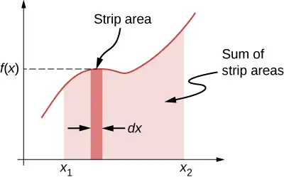
![A linear function f(x) = -k x is plotted, with the x range extending from some x value to some positive x value. The graph is a straight line with negative slope crossing through the origin. The area under the curve to the left of the origin from –x sub A to the origin (where x is negative and f(x) is positive) is shaded in red and is a positive area. Two negative areas are shaded in gray. From the origin to some positive x sub A is a triangular area below the x axis shaded in light gray. From x sub A to a larger x sub B is a trapezoid below the x axis shaded in dark gray.](img/cnx-uphysics-07-01-fsprarea.webp)
Example 7.5 Work Done by a Spring Force
A perfectly elastic spring requires 0.54 J of work to stretch 6 cm from its equilibrium position, as in Figure 7.7(b). (a) What is its spring constant k? (b) How much work is required to stretch it an additional 6 cm?
Strategy
Work “required” means work done against the spring force, which is the negative of the work in Equation 7.5, that is
For part (a), \(x_{A}=0\) and \(x_{B}=6\text{cm}\); for part (b), \(x_{A}=6\text{cm}\) and \(x_{B}=12\text{cm}\). In part (a), the work is given and you can solve for the spring constant; in part (b), you can use the value of k, from part (a), to solve for the work.
Solution
- \(W=0.54\:\text{J}=\frac{1}{2}k[{(6\:\text{cm})}^{2}-0]\), so \(k=3\:\text{N/cm}.\)
- \(W=\frac{1}{2}(3\:\text{N/cm})[{(12\:\text{cm})}^{2}-{(6\:\text{cm})}^{2}]=1.62\:\text{J}.\)
Significance
Since the work done by a spring force is independent of the path, you only needed to calculate the difference in the quantity \(½kx^{2}\) at the end points. Notice that the work required to stretch the spring from 0 to 12 cm is four times that required to stretch it from 0 to 6 cm, because that work depends on the square of the amount of stretch from equilibrium, \(½kx^{2}\). In this circumstance, the work to stretch the spring from 0 to 12 cm is also equal to the work for a composite path from 0 to 6 cm followed by an additional stretch from 6 cm to 12 cm. Therefore, \(4W(0\:\text{cm}\:\text{to}\:6\:\text{cm})=W(0\:\text{cm}\:\text{to}\:6\:\text{cm})+W(6\:\text{cm}\:\text{to}\:12\:\text{cm})\), or \(W(6\:\text{cm}\:\text{to}\:12\:\text{cm})=3W(0\:\text{cm}\:\text{to}\:6\:\text{cm})\), as we found above.
Check Your Understanding
The spring in Example 7.5 is compressed 6 cm from its equilibrium length. (a) Does the spring force do positive or negative work and (b) what is the magnitude?
Answer
a. The spring force is the opposite direction to a compression (as it is for an extension), so the work it does is negative. b. The work done depends on the square of the displacement, which is the same for \(x=\pm 6\:\text{cm}\), so the magnitude is 0.54 J.
7.2 Kinetic Energy¶
Learning Objectives
By the end of this section, you will be able to:
- Calculate the kinetic energy of a particle given its mass and its velocity or momentum
- Evaluate the kinetic energy of a body, relative to different frames of reference
It’s plausible to suppose that the greater the velocity of a body, the greater effect it could have on other bodies. This does not depend on the direction of the velocity, only its magnitude. At the end of the seventeenth century, a quantity was introduced into mechanics to explain collisions between two perfectly elastic bodies, in which one body makes a head-on collision with an identical body at rest. The first body stops, and the second body moves off with the initial velocity of the first body. (If you have ever played billiards or croquet, or seen a model of Newton’s Cradle, you have observed this type of collision.) The idea behind this quantity was related to the forces acting on a body and was referred to as “the energy of motion.” Later on, during the eighteenth century, the name kinetic energy was given to energy of motion.
With this history in mind, we can now state the classical definition of kinetic energy. Note that when we say “classical,” we mean non-relativistic, that is, at speeds much less that the speed of light. At speeds comparable to the speed of light, the special theory of relativity requires a different expression for the kinetic energy of a particle, as discussed in Relativity.
Since objects (or systems) of interest vary in complexity, we first define the kinetic energy of a particle with mass m.
Kinetic Energy
The kinetic energy of a particle is one-half the product of the particle’s mass m and the square of its speed v:
We then extend this definition to any system of particles by adding up the kinetic energies of all the constituent particles:
Note that just as we can express Newton’s second law in terms of either the rate of change of momentum or mass times the rate of change of velocity, so the kinetic energy of a particle can be expressed in terms of its mass and momentum \((\mathbf{\vec{p}}=m\mathbf{\vec{v}}),\) instead of its mass and velocity. Since\(v=p\text{/}m\), we see that
also expresses the kinetic energy of a single particle. Sometimes, this expression is more convenient to use than Equation 7.6.
The units of kinetic energy are mass times the square of speed, or \(\text{kg}\cdot\text{m}^{2}\text{/s}^{2}\). But the units of force are mass times acceleration, \(\text{kg}\cdot\text{m/s}^{2}\), so the units of kinetic energy are also the units of force times distance, which are the units of work, or joules. You will see in the next section that work and kinetic energy have the same units, because they are different forms of the same, more general, physical property.
Example 7.6 Kinetic Energy of an Object
(a) What is the kinetic energy of an 80-kg athlete, running at 10 m/s? (b) The Chicxulub crater in Yucatan, one of the largest existing impact craters on Earth, is thought to have been created by an asteroid, traveling at
22 km/s and releasing \(4.2\:\times\:{10}^{23}\:\text{J}\) of kinetic energy upon impact. What was its mass? (c) In nuclear reactors, thermal neutrons, traveling at about 2.2 km/s, play an important role. What is the kinetic energy of such a particle?
Strategy
To answer these questions, you can use the definition of kinetic energy in Equation 7.6. You also have to look up the mass of a neutron.
Solution
Don’t forget to convert km into m to do these calculations, although, to save space, we omitted showing these conversions.
- \(K=\frac{1}{2}(80\:\text{kg})(10\:\text{m/s})^{2}=4.0\:\text{kJ}.\)
- \(m=2K\text{/}v^{2}=2(4.2\:\times\:{10}^{23}\:\text{J})\text{/}{(22\:\text{km/s})}^{2}=1.7\:\times\:{10}^{15}\:\text{kg}.\)
- \(K=\frac{1}{2}(1.68\:\times\:{10}^{-27}\:\text{kg}){(2.2\:\text{km/s})}^{2}=4.1\:\times\:{10}^{-21}\:\text{J}.\)
Significance
In this example, we used the way mass and speed are related to kinetic energy, and we encountered a very wide range of values for the kinetic energies. Different units are commonly used for such very large and very small values. The energy of the impactor in part (b) can be compared to the explosive yield of TNT and nuclear explosions, \(1\:\text{megaton}=4.18\:\times\:{10}^{15}\:\text{J}.\) The Chicxulub asteroid’s kinetic energy was about a hundred million megatons. At the other extreme, the energy of subatomic particle is expressed in electron-volts, \(1\:\text{eV}=1.6\:\times\:{10}^{-19}\:\text{J}.\) The thermal neutron in part (c) has a kinetic energy of about one fortieth of an electron-volt.
Check Your Understanding
(a) A car and a truck are each moving with the same kinetic energy. Assume that the truck has more mass than the car. Which has the greater speed? (b) A car and a truck are each moving with the same speed. Which has the greater kinetic energy?
Answer
a. the car; b. the truck
Because velocity is a relative quantity, you can see that the value of kinetic energy must depend on your frame of reference. You can generally choose a frame of reference that is suited to the purpose of your analysis and that simplifies your calculations. One such frame of reference is the one in which the observations of the system are made (likely an external frame). Another choice is a frame that is attached to, or moves with, the system (likely an internal frame). The equations for relative motion, discussed in Motion in Two and Three Dimensions, provide a link to calculating the kinetic energy of an object with respect to different frames of reference.
Example 7.7 Kinetic Energy Relative to Different Frames
A 75.0-kg person walks down the central aisle of a subway car at a speed of 1.50 m/s relative to the car, whereas the train is moving at 15.0 m/s relative to the tracks. (a) What is the person’s kinetic energy relative to the car? (b) What is the person’s kinetic energy relative to the tracks? (c) What is the person’s kinetic energy relative to a frame moving with the person?
Strategy
Since speeds are given, we can use \(\frac{1}{2}mv^{2}\) to calculate the person’s kinetic energy. However, in part (a), the person’s speed is relative to the subway car (as given); in part (b), it is relative to the tracks; and in part (c), it is zero. If we denote the car frame by C, the track frame by T, and the person by P, the relative velocities in part (b) are related by \({\mathbf{\vec{v}}}_{\text{PT}}={\mathbf{\vec{v}}}_{\text{PC}}+{\mathbf{\vec{v}}}_{\text{CT}}.\) We can assume that the central aisle and the tracks lie along the same line, but the direction the person is walking relative to the car isn’t specified, so we will give an answer for each possibility, \(v_{\text{PT}}=v_{\text{CT}}\pm v_{\text{PC}}\), as shown in Figure 7.10.
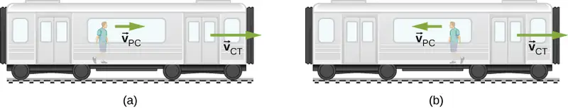
Solution
a. \(K=\frac{1}{2}(75.0\:\text{kg})(1.50\:\text{m/s})^{2}=84.4\:\text{J}.\)
b. \(v_{\text{PT}}=(15.0\pm 1.50)\:\text{m/s}.\) Therefore, the two possible values for kinetic energy relative to the track are
and
c. In a frame where \(v_{\text{P}}=0,K=0\) as well.
Significance
You can see that the kinetic energy of an object can have very different values, depending on the frame of reference. However, the kinetic energy of an object can never be negative, since it is the product of the mass and the square of the speed, both of which are always positive or zero.
Check Your Understanding
You are rowing a boat parallel to the banks of a river. Your kinetic energy relative to the banks is less than your kinetic energy relative to the water. Are you rowing with or against the current?
Answer
against
The kinetic energy of a particle is a single quantity, but the kinetic energy of a system of particles can sometimes be divided into various types, depending on the system and its motion. For example, if all the particles in a system have the same velocity, the system is undergoing translational motion and has translational kinetic energy. If an object is rotating, it could have rotational kinetic energy, or if it’s vibrating, it could have vibrational kinetic energy. The kinetic energy of a system, relative to an internal frame of reference, may be called internal kinetic energy. The kinetic energy associated with random molecular motion may be called thermal energy. These names will be used in later chapters of the book, when appropriate. Regardless of the name, every kind of kinetic energy is the same physical quantity, representing energy associated with motion.
Example 7.8 Special Names for Kinetic Energy
(a) A player lobs a mid-court pass with a 624-g basketball, which covers 15 m in 2 s. What is the basketball’s horizontal translational kinetic energy while in flight? (b) An average molecule of air, in the basketball in part (a), has a mass of 29 u, and an average speed of 500 m/s, relative to the basketball. There are about \(3\:\times\:{10}^{23}\) molecules inside it, moving in random directions, when the ball is properly inflated. What is the average translational kinetic energy of the random motion of all the molecules inside, relative to the basketball? (c) How fast would the basketball have to travel relative to the court, as in part (a), so as to have a kinetic energy equal to the amount in part (b)?
Strategy
In part (a), first find the horizontal speed of the basketball and then use the definition of kinetic energy in terms of mass and speed, \(K=\frac{1}{2}mv^{2}\). Then in part (b), convert unified units to kilograms and then use \(K=\frac{1}{2}mv^{2}\) to get the average translational kinetic energy of one molecule, relative to the basketball. Then multiply by the number of molecules to get the total result. Finally, in part (c), we can substitute the amount of kinetic energy in part (b), and the mass of the basketball in part (a), into the definition \(K=\frac{1}{2}mv^{2}\), and solve for v.
Solution
a. The horizontal speed is (15 m)/(2 s), so the horizontal kinetic energy of the basketball is
b. The average translational kinetic energy of a molecule is
and the total kinetic energy of all the molecules is
c. \(v=\sqrt{2(1.8\:\text{kJ})\text{/}(0.624\:\text{kg})}=76.0\:\text{m/s}.\)
Significance
In part (a), this kind of kinetic energy can be called the horizontal kinetic energy of an object (the basketball), relative to its surroundings (the court). If the basketball were spinning, all parts of it would have not just the average speed, but it would also have rotational kinetic energy. Part (b) reminds us that this kind of kinetic energy can be called internal or thermal kinetic energy. Notice that this energy is about a hundred times the energy in part (a). How to make use of thermal energy will be the subject of the chapters on thermodynamics. In part (c), since the energy in part (b) is about 100 times that in part (a), the speed should be about 10 times as big, which it is (76 compared to 7.5 m/s).
7.3 Work-Energy Theorem¶
Learning Objectives
By the end of this section, you will be able to:
- Apply the work-energy theorem to find information about the motion of a particle, given the forces acting on it
- Use the work-energy theorem to find information about the forces acting on a particle, given information about its motion
We have discussed how to find the work done on a particle by the forces that act on it, but how is that work manifested in the motion of the particle? According to Newton’s second law of motion, the sum of all the forces acting on a particle, or the net force, determines the rate of change in the momentum of the particle, or its motion. Therefore, we should consider the work done by all the forces acting on a particle, or the net work, to see what effect it has on the particle’s motion.
Let’s start by looking at the net work done on a particle as it moves over an infinitesimal displacement, which is the dot product of the net force and the displacement: \(dW_{\text{net}}={\mathbf{\vec{F}}}_{\text{net}}\cdot d\mathbf{\vec{r}}.\) Newton’s second law tells us that \({\mathbf{\vec{F}}}_{\text{net}}=m(d\mathbf{\vec{v}}\text{/}dt),\) so \(dW_{\text{net}}=m(d\mathbf{\vec{v}}\text{/}dt)\cdot d\mathbf{\vec{r}}.\) For the mathematical functions describing the motion of a physical particle, we can rearrange the differentials dt, etc., as algebraic quantities in this expression, that is,
where we substituted the velocity for the time derivative of the displacement and used the commutative property of the dot product [Equation 2.30]. Since derivatives and integrals of scalars are probably more familiar to you at this point, we express the dot product in terms of Cartesian coordinates before we integrate between any two points A and B on the particle’s trajectory. This gives us the net work done on the particle:
In the middle step, we used the fact that the square of the velocity is the sum of the squares of its Cartesian components, and in the last step, we used the definition of the particle’s kinetic energy. This important result is called the work-energy theorem (Figure 7.11).
Work-Energy Theorem
The net work done on a particle equals the change in the particle’s kinetic energy:
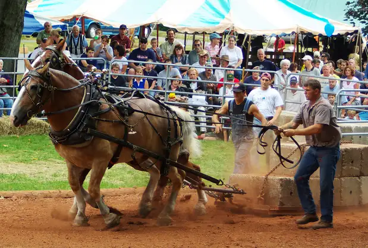
According to this theorem, when an object slows down, its final kinetic energy is less than its initial kinetic energy, the change in its kinetic energy is negative, and so is the net work done on it. If an object speeds up, the net work done on it is positive. When calculating the net work, you must include all the forces that act on an object. If you leave out any forces that act on an object, or if you include any forces that don’t act on it, you will get a wrong result.
The importance of the work-energy theorem, and the further generalizations to which it leads, is that it makes some types of calculations much simpler to accomplish than they would be by trying to solve Newton’s second law. For example, in Newton’s Laws of Motion, we found the speed of an object sliding down a frictionless plane by solving Newton’s second law for the acceleration and using kinematic equations for constant acceleration, obtaining
where s is the displacement down the plane.
We can also get this result from the work-energy theorem in Equation 7.1. Since only two forces are acting on the object-gravity and the normal force-and the normal force doesn't do any work, the net work is just the work done by gravity. The work dW is the dot product of the force of gravity or \(\overrightarrow{\mathbf{F}}=-\text{mg}\widehat{\text{j}}\) and the displacement \(\overrightarrow{dr}=dx\hat{i}+dy\hat{j}\). After taking the dot product and integrating from an initial position \(y_{i}\) to a final position \(y_{f}\), one finds the net work as
where y is positive up. The work-energy theorem says that this equals the change in kinetic energy:
Using a right triangle, we can see that \((y_{\text{f}}-y_{\text{i}})=(s_{\text{f}}-s_{\text{i}})\sin\:\theta,\) so the result for the final speed is the same.
What is gained by using the work-energy theorem? The answer is that for a frictionless plane surface, not much. However, Newton’s second law is easy to solve only for this particular case, whereas the work-energy theorem gives the final speed for any shaped frictionless surface. For an arbitrary curved surface, the normal force is not constant, and Newton’s second law may be difficult or impossible to solve analytically. Constant or not, for motion along a surface, the normal force never does any work, because it’s perpendicular to the displacement. A calculation using the work-energy theorem avoids this difficulty and applies to more general situations.
Problem-Solving Strategy: Work-Energy Theorem
- Draw a free-body diagram for each force on the object.
- Determine whether or not each force does work over the displacement in the diagram. Be sure to keep any positive or negative signs in the work done.
- Add up the total amount of work done by each force.
- Set this total work equal to the change in kinetic energy and solve for any unknown parameter.
- Check your answers. If the object is traveling at a constant speed or zero acceleration, the total work done should be zero and match the change in kinetic energy. If the total work is positive, the object must have sped up or increased kinetic energy. If the total work is negative, the object must have slowed down or decreased kinetic energy.
Example 7.9 Loop-the-Loop
The frictionless track for a toy car includes a loop-the-loop of radius R. How high, measured from the bottom of the loop, must the car be placed to start from rest on the approaching section of track and go all the way around the loop?
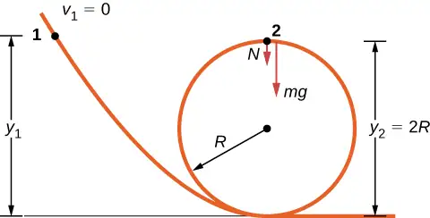
Strategy
The free-body diagram at the final position of the object is drawn in Figure 7.12. The gravitational work is the only work done over the displacement that is not zero. Since the weight points in the same direction as the net vertical displacement, the total work done by the gravitational force is positive. From the work-energy theorem, the starting height determines the speed of the car at the top of the loop,
where the notation is shown in the accompanying figure. At the top of the loop, the normal force and gravity are both down and the acceleration is centripetal, so
The condition for maintaining contact with the track is that there must be some normal force, however slight; that is, \(N \gt 0\). Substituting for \(v_{2}^{2}\) and N, we can find the condition for \(y_{1}\).
Solution
Implement the steps in the strategy to arrive at the desired result:
Significance
On the surface of the loop, the normal component of gravity and the normal contact force must provide the centripetal acceleration of the car going around the loop. The tangential component of gravity slows down or speeds up the car. A child would find out how high to start the car by trial and error, but now that you know the work-energy theorem, you can predict the minimum height (as well as other more useful results) from physical principles. By using the work-energy theorem, you did not have to solve a differential equation to determine the height.
Check Your Understanding
Suppose the radius of the loop-the-loop in Example 7.9 is 15 cm and the toy car starts from rest at a height of 45 cm above the bottom. What is its speed at the top of the loop?
Answer
\(\sqrt{3}\:\text{m/s}\)
Media
Watch this video to see a looping rollercoaster.
In situations where the motion of an object is known, but the values of one or more of the forces acting on it are not known, you may be able to use the work-energy theorem to get some information about the forces. Work depends on the force and the distance over which it acts, so the information is provided via their product.
Example 7.10 Determining a Stopping Force
A bullet has a mass of 40 grains (2.60 g) and a muzzle velocity of 1100 ft./s (335 m/s). It can penetrate eight 1-inch pine boards, each with thickness 0.75 inches. What is the average stopping force exerted by the wood, as shown in Figure 7.13?
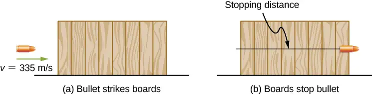
Strategy
We can assume that under the general conditions stated, the bullet loses all its kinetic energy penetrating the boards, so the work-energy theorem says its initial kinetic energy is equal to the average stopping force times the distance penetrated. The change in the bullet’s kinetic energy and the net work done stopping it are both negative, so when you write out the work-energy theorem, with the net work equal to the average force times the stopping distance, that’s what you get. The total thickness of eight 1-inch pine boards that the bullet penetrates is \(8\:\times\:\frac{3}{4}\:\text{in}.=6\:\text{in}.=15.2\:\text{cm}.\)
Solution
Applying the work-energy theorem, we get
so
Significance
We could have used Newton’s second law and kinematics in this example, but the work-energy theorem also supplies an answer to less simple situations. The penetration of a bullet, fired vertically upward into a block of wood, is discussed in one section of Asif Shakur’s recent article [“Bullet-Block Science Video Puzzle.” The Physics Teacher (January 2015) 53(1): 15-16]. If the bullet is fired dead center into the block, it loses all its kinetic energy and penetrates slightly farther than if fired off-center. The reason is that if the bullet hits off-center, it has a little kinetic energy after it stops penetrating, because the block rotates. The work-energy theorem implies that a smaller change in kinetic energy results in a smaller penetration. You will understand more of the physics in this interesting article after you finish reading Angular Momentum.
Media
Learn more about work and energy in this PhET simulation called “the ramp.” Try changing the force pushing the box and the frictional force along the incline. The work and energy plots can be examined to note the total work done and change in kinetic energy of the box.
7.4 Power¶
Learning Objectives
By the end of this section, you will be able to:
- Relate the work done during a time interval to the power delivered
- Find the power expended by a force acting on a moving body
The concept of work involves force and displacement; the work-energy theorem relates the net work done on a body to the difference in its kinetic energy, calculated between two points on its trajectory. None of these quantities or relations involves time explicitly, yet we know that the time available to accomplish a particular amount of work is frequently just as important to us as the amount itself. In the chapter-opening figure, several sprinters may have achieved the same velocity at the finish, and therefore did the same amount of work, but the winner of the race did it in the least amount of time.
We express the relation between work done and the time interval involved in doing it, by introducing the concept of power. Since work can vary as a function of time, we first define average power as the work done during a time interval, divided by the interval,
Then, we can define the instantaneous power (frequently referred to as just plain power).
Power
Power is defined as the rate of doing work, or the limit of the average power for time intervals approaching zero,
If the power is constant over a time interval, the average power for that interval equals the instantaneous power, and the work done by the agent supplying the power is \(W=P\Delta t\). If the power during an interval varies with time, then the work done is the time integral of the power,
The work-energy theorem relates how work can be transformed into kinetic energy. Since there are other forms of energy as well, as we discuss in the next chapter, we can also define power as the rate of transfer of energy. Work and energy are measured in units of joules, so power is measured in units of joules per second, which has been given the SI name watts, abbreviation W: \(1\:\text{J/s}=1\:\text{W}\). Another common unit for expressing the power capability of everyday devices is horsepower: \(1\:\text{hp}=746\:\text{W}\).
Example 7.11 Pull-Up Power
An 80-kg army trainee does pull-ups on a horizontal bar (Figure 7.14). It takes the trainee 0.8 seconds to raise the body from a lower position to where the chin is above the bar. How much power do the trainee’s muscles supply moving his body from the lower position to where the chin is above the bar? (Hint: Make reasonable estimates for any quantities needed.)
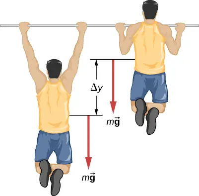
Strategy
The work done against gravity, going up or down a distance \(\Delta y\), is \(mg\Delta y.\) Let’s assume that \(\Delta y=2\text{ft}\approx 60\:\text{cm}.\) Also, assume that the arms comprise 10% of the body mass and are not included in the moving mass. With these assumptions, we can calculate the work done.
Solution
The result we get, applying our assumptions, is
Significance
This is typical for power expenditure in strenuous exercise; in everyday units, it’s somewhat more than one horsepower \((1\:\text{hp}=746\:\text{W}).\)
Check Your Understanding
Estimate the power expended by a weightlifter raising a 150-kg barbell 2 m in 3 s.
Answer
980 W
The power involved in moving a body can also be expressed in terms of the forces acting on it. If a force \(\mathbf{\vec{F}}\) acts on a body that is displaced \(d\mathbf{\vec{r}}\) in a time dt, the power expended by the force is
equation callout
where \(\mathbf{\vec{v}}\) is the velocity of the body. The fact that the limits implied by the derivatives exist, for the motion of a real body, justifies the rearrangement of the infinitesimals.
Example 7.12 Automotive Power Driving Uphill
How much power must an automobile engine expend to move a 1200-kg car up a 15% grade at 90 km/h (Figure 7.15)? Assume that 25% of this power is dissipated overcoming air resistance and friction.
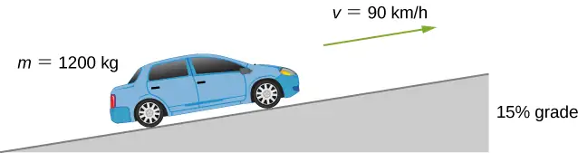
Strategy
At constant velocity, there is no change in kinetic energy, so the net work done to move the car is zero. Therefore the power supplied by the engine to move the car equals the power expended against gravity and air resistance. By assumption, 75% of the power is supplied against gravity, which equals \(m\mathbf{\vec{g}}\cdot\mathbf{\vec{v}}=mgv\:\sin\:\theta,\) where \(\theta\) is the angle of the incline. A 15% grade means \(\tan\:\theta=0.15.\) This reasoning allows us to solve for the power required.
Solution
Carrying out the suggested steps, we find
or
or about 78 hp. (You should supply the steps used to convert units.)
Significance
This is a reasonable amount of power for the engine of a small to mid-size car to supply \((1\:\text{hp}=0.746\:\text{kW}\text{).}\) Note that this is only the power expended to move the car. Much of the engine’s power goes elsewhere, for example, into waste heat. That’s why cars need radiators. Any remaining power could be used for acceleration, or to operate the car’s accessories.
Chapter Review¶
Key Terms¶
- average power
- work done in a time interval divided by the time interval
- kinetic energy
- energy of motion, one-half an object’s mass times the square of its speed
- net work
- work done by all the forces acting on an object
- power
- (or instantaneous power) rate of doing work
- work
- done when a force acts on something that undergoes a displacement from one position to another
- work-energy theorem
- net work done on a particle is equal to the change in its kinetic energy
Key Equations¶
| Work done by a force over an infinitesimal displacement | \(dW=\overrightarrow{\mathbf{F}}\cdot d\overrightarrow{\mathbf{r}}=|\overrightarrow{\mathbf{F}}||d\overrightarrow{\mathbf{r}}|\cos\:\theta\) |
| Work done by a force acting along a path from A to B | \(W_{AB}=\displaystyle \int_{\text{path}AB}\mathbf{\vec{F}}\cdot d\mathbf{\vec{r}}\) |
| Work done by a constant force of kinetic friction | \(W_{\text{fr}}=-f_{k}|l_{AB}|\) |
| Work done going from A to B by Earth’s gravity, near its surface | \(W_{\text{grav,}AB}=-mg(y_{B}-y_{A})\) |
| Work done going from A to B by one-dimensional spring force | \(W_{\text{spring,}AB}=-\left( \frac{1}{2}k \right)(x_{B}^{2}-x_{A}^{2})\) |
| Kinetic energy of a non-relativistic particle | \(K=\frac{1}{2}mv^{2}=\frac{p^{2}}{2m}\) |
| Work-energy theorem | \(W_{\text{net}}=K_{B}-K_{A}\) |
| Power as rate of doing work | \(P=\frac{dW}{dt}\) |
| Power as the dot product of force and velocity | \(P=\mathbf{\vec{F}}\cdot\mathbf{\vec{v}}\) |
Summary¶
7.1 Work¶
- The infinitesimal increment of work done by a force, acting over an infinitesimal displacement, is the dot product of the force and the displacement.
- The work done by a force, acting over a finite path, is the integral of the infinitesimal increments of work done along the path.
- The work done against a force is the negative of the work done by the force.
- The work done by a normal or frictional contact force must be determined in each particular case.
- The work done by the force of gravity, on an object near the surface of Earth, depends only on the weight of the object and the difference in height through which it moved.
- The work done by a spring force, acting from an initial position to a final position, depends only on the spring constant and the squares of those positions.
7.2 Kinetic Energy¶
- The kinetic energy of a particle is the product of one-half its mass and the square of its speed, for non-relativistic speeds.
- The kinetic energy of a system is the sum of the kinetic energies of all the particles in the system.
- Kinetic energy is relative to a frame of reference, is always positive, and is sometimes given special names for different types of motion.
7.3 Work-Energy Theorem¶
- Because the net force on a particle is equal to its mass times the derivative of its velocity, the integral for the net work done on the particle is equal to the change in the particle’s kinetic energy. This is the work-energy theorem.
- You can use the work-energy theorem to find certain properties of a system, without having to solve the differential equation for Newton’s second law.
7.4 Power¶
- Power is the rate of doing work; that is, the derivative of work with respect to time.
- Alternatively, the work done, during a time interval, is the integral of the power supplied over the time interval.
- The power delivered by a force, acting on a moving particle, is the dot product of the force and the particle’s velocity.
Conceptual Questions¶
7.1 Work¶
1. Give an example of something we think of as work in everyday circumstances that is not work in the scientific sense. Is energy transferred or changed in form in your example? If so, explain how this is accomplished without doing work.
Answer
When you push on the wall, this “feels” like work; however, there is no displacement so there is no physical work. Energy is consumed, but no energy is transferred.
2. Give an example of a situation in which there is a force and a displacement, but the force does no work. Explain why it does no work.
3. Describe a situation in which a force is exerted for a long time but does no work. Explain.
Answer
If you continue to push on a wall without breaking through the wall, you continue to exert a force with no displacement, so no work is done.
4. A body moves in a circle at constant speed. Does the centripetal force that accelerates the body do any work? Explain.
5. Suppose you throw a ball upward and catch it when it returns at the same height. How much work does the gravitational force do on the ball over its entire trip?
Answer
The total displacement of the ball is zero, so no work is done.
6. Why is it more difficult to do sit-ups while on a slant board than on a horizontal surface? (See below.)
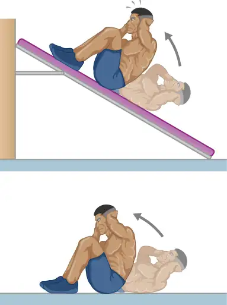
7. As a young man, Tarzan climbed up a vine to reach his tree house. As he got older, he decided to build and use a staircase instead. Since the work of the gravitational force mg is path independent, what did the King of the Apes gain in using stairs?
Answer
Both require the same gravitational work, but the stairs allow Tarzan to take this work over a longer time interval and hence gradually exert his energy, rather than dramatically by climbing a vine.
7.2 Kinetic Energy¶
8. A particle of m has a velocity of \(v_{x}\mathbf{\hat{i}}+v_{y}\mathbf{\hat{j}}+v_{z}\mathbf{\hat{k}}.\) Is its kinetic energy given by \(m(v_{x}{}^{2}\mathbf{\hat{i}}+v_{y}{}^{2}\mathbf{\hat{j}}+v_{z}{}^{2}\mathbf{\hat{k}}\text{)/2?}\) If not, what is the correct expression?
9. One particle has mass m and a second particle has mass 2m. The second particle is moving with speed v and the first with speed 2v. How do their kinetic energies compare?
Answer
The first particle has a kinetic energy of \(4(\frac{1}{2}mv^{2})\) whereas the second particle has a kinetic energy of \(2(\frac{1}{2}mv^{2}),\) so the first particle has twice the kinetic energy of the second particle.
10. A person drops a pebble of mass \(m_{1}\) from a height h, and it hits the floor with kinetic energy K. The person drops another pebble of mass \(m_{2}\) from a height of 2h, and it hits the floor with the same kinetic energy K. How do the masses of the pebbles compare?
7.3 Work-Energy Theorem¶
11. The person shown below does work on the lawn mower. Under what conditions would the mower gain energy from the person pushing the mower? Under what conditions would it lose energy?
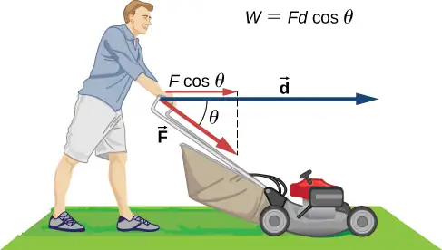
Answer
The mower would gain energy if \(-90{}^{\circ} \lt \theta \lt 90{}^{\circ}.\) It would lose energy if \(90{}^{\circ} \lt \theta \lt 270{}^{\circ}.\) The mower may also lose energy due to friction with the grass while pushing; however, we are not concerned with that energy loss for this problem.
12. Work done on a system puts energy into it. Work done by a system removes energy from it. Give an example for each statement.
13. Two marbles of masses m and 2m are dropped from a height h. Compare their kinetic energies when they reach the ground.
Answer
The second marble has twice the kinetic energy of the first because kinetic energy is directly proportional to mass, like the work done by gravity.
14. Compare the work required to accelerate a car of mass 2000 kg from 30.0 to 40.0 km/h with that required for an acceleration from 50.0 to 60.0 km/h.
15. Suppose you are jogging at constant velocity. Are you doing any work on the environment and vice versa?
Answer
Unless the environment is nearly frictionless, you are doing some positive work on the environment to cancel out the frictional work against you, resulting in zero total work producing a constant velocity.
16. Two forces act to double the speed of a particle, initially moving with kinetic energy of 1 J. One of the forces does 4 J of work. How much work does the other force do?
7.4 Power¶
17. Most electrical appliances are rated in watts. Does this rating depend on how long the appliance is on? (When off, it is a zero-watt device.) Explain in terms of the definition of power.
Answer
Appliances are rated in terms of the energy consumed in a relatively small time interval. It does not matter how long the appliance is on, only the rate of change of energy per unit time.
18. Explain, in terms of the definition of power, why energy consumption is sometimes listed in kilowatt-hours rather than joules. What is the relationship between these two energy units?
19. A spark of static electricity, such as that you might receive from a doorknob on a cold dry day, may carry a few hundred watts of power. Explain why you are not injured by such a spark.
Answer
The spark occurs over a relatively short time span, thereby delivering a very low amount of energy to your body.
20. Does the work done in lifting an object depend on how fast it is lifted? Does the power expended depend on how fast it is lifted?
21. Can the power expended by a force be negative?
Answer
If the force is antiparallel or points in an opposite direction to the velocity, the power expended can be negative.
22. How can a 50-W light bulb use more energy than a 1000-W oven?
Problems¶
7.1 Work¶
23. How much work does a supermarket checkout attendant do on a can of soup he pushes 0.600 m horizontally with a force of 5.00 N?
Answer
3.00 J
24. A 75.0-kg person climbs stairs, gaining 2.50 m in height. Find the work done to accomplish this task.
25. (a) Calculate the work done on a 1500-kg elevator car by its cable to lift it 40.0 m at constant speed, assuming friction averages 100 N. (b) What is the work done on the elevator car by the gravitational force in this process? (c) What is the total work done on the elevator car?
Answer
a. 592 kJ; b. –588 kJ; c. 0 J
26. Suppose a car travels 108 km at a speed of 30.0 m/s, and uses 2.0 gal of gasoline. Only 30% of the gasoline goes into useful work by the force that keeps the car moving at constant speed despite friction. (The energy content of gasoline is about 140 MJ/gal.) (a) What is the magnitude of the force exerted to keep the car moving at constant speed? (b) If the required force is directly proportional to speed, how many gallons will be used to drive 108 km at a speed of 28.0 m/s?
27. An 85.0-kg man who pushes a crate 4.00 m up along a ramp that makes an angle of \(20.0{}^{\circ}\) with the horizontal (see below). He exerts a force of 500 N on the crate parallel to the ramp and moves at a constant speed. Find the total work done on the crate and the man.
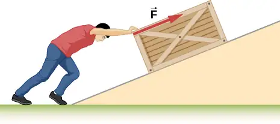
Answer
3.14 kJ
28. How much work is done by the boy pulling his sister 30.0 m in a wagon as shown below?
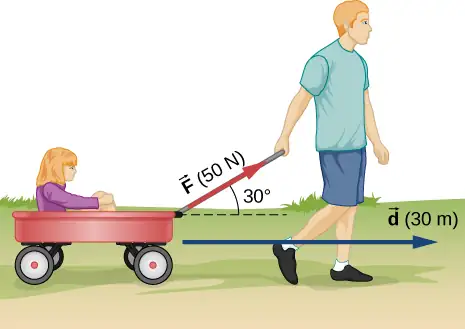
29. A shopper pushes a grocery cart 20.0 m at constant speed on level ground, against a 35.0 N frictional force. He pushes in a direction \(25.0{}^{\circ}\) below the horizontal. (a) What is the work done on the cart by friction? (b) What is the work done on the cart by the gravitational force? (c) What is the work done on the cart by the shopper? (d) Find the force the shopper exerts, using energy considerations. (e) What is the total work done on the cart?
Answer
a. –700 J; b. 0 J; c. 700 J; d. 38.6 N; e. 0 J
30. Suppose the ski patrol lowers a rescue sled and victim, having a total mass of 90.0 kg, down a \(60.0{}^{\circ}\) slope at constant speed, as shown below. The coefficient of friction between the sled and the snow is 0.100. (a) How much work is done by friction as the sled moves 30.0 m along the hill? (b) How much work is done by the rope on the sled in this distance? (c) What is the work done by the gravitational force on the sled? (d) What is the total work done?
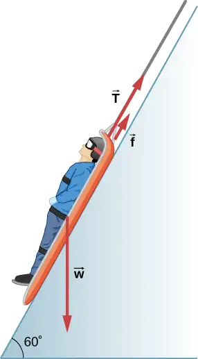
31. A constant 20-N force pushes a small ball in the direction of the force over a distance of 5.0 m. What is the work done by the force?
Answer
100 J
32. A toy cart is pulled a distance of 6.0 m in a straight line across the floor. The force pulling the cart has a magnitude of 20 N and is directed at \(37{}^{\circ}\) above the horizontal. What is the work done by this force?
33. A 5.0-kg box rests on a horizontal surface. The coefficient of kinetic friction between the box and surface is \(\mu_{K}=0.50.\) A horizontal force pulls the box at constant velocity for 10 cm. Find the work done by (a) the applied horizontal force, (b) the frictional force, and (c) the net force.
Answer
a. 2.45 J; b. – 2.45 J; c. 0 J
34. A sled plus passenger with total mass 50 kg is pulled 20 m across the snow \((\mu_{k}=0.20)\) at constant velocity by a force directed \(25{}^{\circ}\) above the horizontal. Calculate (a) the work of the applied force, (b) the work of friction, and (c) the total work.
35. Suppose that the sled plus passenger of the preceding problem is pushed 20 m across the snow at constant velocity by a force directed \(30{}^{\circ}\) below the horizontal. Calculate (a) the work of the applied force, (b) the work of friction, and (c) the total work.
Answer
a. 2.22 kJ; b. −2.22 kJ; c. 0 J
36. How much work does the force \(F(x)=(-2.0\text{/}x)\:\text{N}\) do on a particle as it moves from \(x=2.0\:\text{m}\) to \(x=5.0\:\text{m?}\)
37. How much work is done against the gravitational force on a 5.0-kg briefcase when it is carried from the ground floor to the roof of the Empire State Building, a vertical climb of 380 m?
Answer
18.6 kJ
38. It takes 500 J of work to compress a spring 10 cm. What is the force constant of the spring?
39. A bungee cord is essentially a very long rubber band that can stretch up to four times its unstretched length. However, its spring constant varies over its stretch [see Menz, P.G. “The Physics of Bungee Jumping.” The Physics Teacher (November 1993) 31: 483-487]. Take the length of the cord to be along the x-direction and define the stretch x as the length of the cord l minus its un-stretched length \(l_{0};\) that is, \(x=l-l_{0}\) (see below). Suppose a particular bungee cord has a spring constant, for \(0\le x\le 4.88\:\text{m}\), of \(k_{1}=204\:\text{N/m}\) and for \(x\ge 4.88\:\text{m}\), of \(k_{2}=111\:\text{N/m}.\) (Recall that the spring constant is the slope of the force F(x) versus its stretch x.) (a) What is the tension in the cord when the stretch is 16.7 m (the maximum desired for a given jump)? (b) How much work must be done against the elastic force of the bungee cord to stretch it 16.7 m?
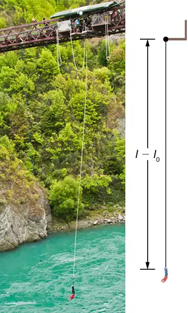
Answer
a. 2.32 kN; b. 22.0 kJ
40. A bungee cord exerts a nonlinear elastic force of magnitude \(F(x)=k_{1}x+k_{2}x^{3},\) where x is the distance the cord is stretched, \(k_{1}=204\:\text{N/m}\) and \(k_{2}=-0.233{\:\text{N/m}}^{3}.\) How much work must be done on the cord to stretch it 16.7 m?
41. Engineers desire to model the magnitude of the elastic force of a bungee cord using the equation
\(F(x)=a\left[ \frac{x+9\:\text{m}}{9\:\text{m}}-{\left( \frac{9\:\text{m}}{x+9\:\text{m}} \right)}^{2} \right]\),
where x is the stretch of the cord along its length and a is a constant. If it takes 22.0 kJ of work to stretch the cord by 16.7 m, determine the value of the constant a.
Answer
835 N
42. A particle moving in the xy-plane is subject to a force
\(\overrightarrow{\mathbf{F}}(x,y)=(50\:\text{N}/\text{m})(x\mathbf{\hat{i}}+\frac{y^{2}}{3\text{m}}\mathbf{\hat{j}})\)
where x and y are in meters. Calculate the work done on the particle by this force, as it moves in a straight line from the point (3 m, 4 m) to the point (6 m, 8 m).
43. A particle moves along a curved path \(y(x)=(10\:\text{m})\{1+\cos[(0.1{\:\text{m}}^{-1})x]\},\) from \(x=0\) to \(x=10\pi\:\text{m,}\) subject to a tangential force of variable magnitude \(F(x)=(10\:\text{N})\sin[(0.1{\:\text{m}}^{-1})x].\) How much work does the force do? (Hint: Consult a table of integrals or use a numerical integration program.)
Answer
257 J
7.2 Kinetic Energy¶
44. Compare the kinetic energy of a 20,000-kg truck moving at 110 km/h with that of an 80.0-kg astronaut in orbit moving at 27,500 km/h.
45. (a) How fast must a 3000-kg elephant move to have the same kinetic energy as a 65.0-kg sprinter running at 10.0 m/s? (b) Discuss how the larger energies needed for the movement of larger animals would relate to metabolic rates.
Answer
a. 1.47 m/s; b. answers may vary
46. Estimate the kinetic energy of a 90,000-ton aircraft carrier moving at a speed of at 30 knots. You will need to look up the definition of a nautical mile to use in converting the unit for speed, where 1 knot equals 1 nautical mile per hour. Furthermore for this problem, 1 ton is equivalent to 2,000 pounds.
47. Calculate the kinetic energies of (a) a 2000.0-kg automobile moving at 100.0 km/h; (b) an 80.-kg runner sprinting at 10. m/s; and (c) a \(9.1\:\times\:{10}^{-31}\:\text{-kg}\) electron moving at \(2.0\:\times\:{10}^{7}\:\text{m/s}.\)
Answer
a. 772 kJ; b. 4.0 kJ; c. \(1.8\:\times\:{10}^{-16}\:\text{J}\)
48. A 5.0-kg body has three times the kinetic energy of an 8.0-kg body. Calculate the ratio of the speeds of these bodies.
49. An 8.0-g bullet has a speed of 800 m/s. (a) What is its kinetic energy? (b) What is its kinetic energy if the speed is halved?
Answer
a. 2.6 kJ; b. 640 J
7.3 Work-Energy Theorem¶
50. (a) Calculate the force needed to bring a 950-kg car to rest from a speed of 90.0 km/h in a distance of 120 m (a fairly typical distance for a non-panic stop). (b) Suppose instead the car hits a concrete abutment at full speed and is brought to a stop in 2.00 m. Calculate the force exerted on the car and compare it with the force found in part (a).
51. A car’s bumper is designed to withstand a 4.0-km/h (1.1-m/s) collision with an immovable object without damage to the body of the car. The bumper cushions the shock by absorbing the force over a distance. Calculate the magnitude of the average force on a bumper that collapses 0.200 m while bringing a 900-kg car to rest from an initial speed of 1.1 m/s.
Answer
2.72 kN
52. Boxing gloves are padded to lessen the force of a blow. (a) Calculate the force exerted by a boxing glove on an opponent’s face, if the glove and face compress 7.50 cm during a blow in which the 7.00-kg arm and glove are brought to rest from an initial speed of 10.0 m/s. (b) Calculate the force exerted by an identical blow in the days when no gloves were used, and the knuckles and face would compress only 2.00 cm. Assume the change in mass by removing the glove is negligible. (c) Discuss the magnitude of the force with glove on. Does it seem high enough to cause damage even though it is lower than the force with no glove?
53. Using energy considerations, calculate the average force a 60.0-kg sprinter exerts backward on the track to accelerate from 2.00 to 8.00 m/s in a distance of 25.0 m, if he encounters a headwind that exerts an average force of 30.0 N against him.
Answer
102 N
54. A 5.0-kg box has an acceleration of \(2.0{\:\text{m/s}}^{2}\) when it is pulled by a horizontal force across a surface with \(\mu_{K}=0.50.\) Find the work done over a distance of 10 cm by (a) the horizontal force, (b) the frictional force, and (c) the net force. (d) What is the change in kinetic energy of the box?
55. A constant 10-N horizontal force is applied to a 20-kg cart at rest on a level floor. If friction is negligible, what is the speed of the cart when it has been pushed 8.0 m?
Answer
2.8 m/s
56. In the preceding problem, the 10-N force is applied at an angle of \(45{}^{\circ}\) below the horizontal. What is the speed of the cart when it has been pushed 8.0 m?
57. Compare the work required to stop a 100-kg crate sliding at 1.0 m/s and an 8.0-g bullet traveling at 500 m/s.
Answer
\(W(\text{bullet})=20\:\times\:W(\text{crate})\)
58. A wagon with its passenger sits at the top of a hill. The wagon is given a slight push and rolls 100 m down a \(10{}^{\circ}\) incline to the bottom of the hill. What is the wagon’s speed when it reaches the end of the incline. Assume that the retarding force of friction is negligible.
59. An 8.0-g bullet with a speed of 800 m/s is shot into a wooden block and penetrates 20 cm before stopping. What is the average force of the wood on the bullet? Assume the block does not move.
Answer
12.8 kN
60. A 2.0-kg block starts with a speed of 10 m/s at the bottom of a plane inclined at \(37{}^{\circ}\) to the horizontal. The coefficient of sliding friction between the block and plane is \(\mu_{k}=0.30.\) (a) Use the work-energy principle to determine how far the block slides along the plane before momentarily coming to rest. (b) After stopping, the block slides back down the plane. What is its speed when it reaches the bottom? (Hint: For the round trip, only the force of friction does work on the block.)
61. When a 3.0-kg block is pushed against a massless spring of force constant \(4.5\:\times\:{10}^{3}\:\text{N/m,}\) the spring is compressed 8.0 cm. The block is released, and it slides 2.0 m (from the point at which it is released) across a horizontal surface before friction stops it. What is the coefficient of kinetic friction between the block and the surface?
Answer
0.25
62. A small block of mass 200 g starts at rest at A, slides to B where its speed is \(v_{B}=8.0\:\text{m/s,}\) then slides along the horizontal surface a distance 10 m before coming to rest at C. (See below.) (a) What is the work of friction along the curved surface? (b) What is the coefficient of kinetic friction along the horizontal surface?
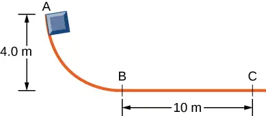
63. A small object is placed at the top of an incline that is essentially frictionless. The object slides down the incline onto a rough horizontal surface, where it stops in 5.0 s after traveling 60 m. (a) What is the speed of the object at the bottom of the incline and its acceleration along the horizontal surface? (b) What is the height of the incline?
Answer
a. 24 m/s, −4.8 m/s2; b. 29.4 m
64. When released, a 100-g block slides down the path shown below, reaching the bottom with a speed of 4.0 m/s. How much work does the force of friction do?
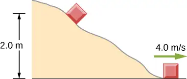
65. A 0.22LR-caliber bullet like that mentioned in Example 7.10 is fired into a door made of a single thickness of 1-inch pine boards. How fast would the bullet be traveling after it penetrated through the door?
Answer
313 m/s
66. A sled starts from rest at the top of a snow-covered incline that makes a \(22{}^{\circ}\) angle with the horizontal. After sliding 75 m down the slope, its speed is 14 m/s. Use the work-energy theorem to calculate the coefficient of kinetic friction between the runners of the sled and the snowy surface.
7.4 Power¶
67. A person in good physical condition can put out 100 W of useful power for several hours at a stretch, perhaps by pedaling a mechanism that drives an electric generator. Neglecting any problems of generator efficiency and practical considerations such as resting time: (a) How many people would it take to run a 4.00-kW electric clothes dryer? (b) How many people would it take to replace a large electric power plant that generates 800 MW?
Answer
a. 40; b. 8 million
68. What is the cost of operating a 3.00-W electric clock for a year if the cost of electricity is $0.0900 per \(\text{kW}\cdot\text{h}\)?
69. A large household air conditioner may consume 15.0 kW of power. What is the cost of operating this air conditioner 3.00 h per day for 30.0 d if the cost of electricity is $0.110 per \(\text{kW}\cdot\text{h}\)?
Answer
$149
70. (a) What is the average power consumption in watts of an appliance that uses 5.00 \(\text{kW}\cdot\text{h}\) of energy per day? (b) How many joules of energy does this appliance consume in a year?
71. (a) What is the average useful power output of a person who does \(6.00\:\times\:{10}^{6}\:\text{J}\) of useful work in 8.00 h? (b) Working at this rate, how long will it take this person to lift 2000 kg of bricks 1.50 m to a platform? (Work done to lift his body can be omitted because it is not considered useful output here.)
Answer
a. 208 W; b. 141 s
72. A 500-kg dragster accelerates from rest to a final speed of 110 m/s in 400 m (about a quarter of a mile) and encounters an average frictional force of 1200 N. What is its average power output in watts and horsepower if this takes 7.30 s?
73. (a) How long will it take an 850-kg car with a useful power output of 40.0 hp (1 hp equals 746 W) to reach a speed of 15.0 m/s, neglecting friction? (b) How long will this acceleration take if the car also climbs a 3.00-m high hill in the process?
Answer
a. 3.20 s; b. 4.04 s
74. (a) Find the useful power output of an elevator motor that lifts a 2500-kg load a height of 35.0 m in 12.0 s, if it also increases the speed from rest to 4.00 m/s. Note that the total mass of the counterbalanced system is 10,000 kg—so that only 2500 kg is raised in height, but the full 10,000 kg is accelerated. (b) What does it cost, if electricity is $0.0900 per \(\text{kW}\cdot\text{h}\) ?
75. (a) How long would it take a \(1.50\:\:\times\:{10}^{5}\text{-kg}\) airplane with engines that produce 100 MW of power to reach a speed of 250 m/s and an altitude of 12.0 km if air resistance were negligible? (b) If it actually takes 900 s, what is the power? (c) Given this power, what is the average force of air resistance if the airplane takes 1200 s? (Hint: You must find the distance the plane travels in 1200 s assuming constant acceleration.)
Answer
a. 224 s; b. 24.8 MW; c. 49.7 kN
76. Calculate the power output needed for a 950-kg car to climb a \(2.00{}^{\circ}\) slope at a constant 30.0 m/s while encountering wind resistance and friction totaling 600 N.
77. A man of mass 80 kg runs up a flight of stairs 20 m high in 10 s. (a) how much power is used to lift the man? (b) If the man’s body is 25% efficient, how much power does he expend?
Answer
a. 1.57 kW; b. 6.28 kW
78. The man of the preceding problem consumes approximately \(1.05\:\times\:{10}^{7}\:\text{J}\) (2500 food calories) of energy per day in maintaining a constant weight. What is the average power he produces over a day? Compare this with his power production when he runs up the stairs.
79. An electron in a television tube is accelerated uniformly from rest to a speed of \(8.4\:\times\:{10}^{7}\:\text{m/s}\) over a distance of 2.5 cm. What is the power delivered to the electron at the instant that its displacement is 1.0 cm?
Answer
\(6.83\text{μW}\)
80. Coal is lifted out of a mine a vertical distance of 50 m by an engine that supplies 500 W to a conveyor belt. How much coal per minute can be brought to the surface? Ignore the effects of friction.
81. A girl pulls her 15-kg wagon along a flat sidewalk by applying a 10-N force at \(37{}^{\circ}\) to the horizontal. Assume that friction is negligible and that the wagon starts from rest. (a) How much work does the girl do on the wagon in the first 2.0 s. (b) How much instantaneous power does she exert at \(t=2.0\:\text{s}\)?
Answer
a. 8.51 J; b. 8.51 W
82. A typical automobile engine has an efficiency of 25%. Suppose that the engine of a 1000-kg automobile has a maximum power output of 140 hp. What is the maximum grade that the automobile can climb at 50 km/h if the frictional retarding force on it is 300 N?
83. When jogging at 13 km/h on a level surface, a 70-kg man uses energy at a rate of approximately 850 W. Using the facts that the “human engine” is approximately 25% efficient, determine the rate at which this man uses energy when jogging up a \(5.0{}^{\circ}\) slope at this same speed. Assume that the frictional retarding force is the same in both cases.
Answer
1.7 kW
Additional Problems¶
84. A cart is pulled a distance D on a flat, horizontal surface by a constant force F that acts at an angle \(\theta\) with the horizontal direction. The other forces on the object during this time are gravity (\(F_{w}\)), normal forces (\(F_{N1}\)) and (\(F_{N2}\)), and rolling frictions \(F_{r1}\) and \(F_{r2}\), as shown below. What is the work done by each force?
![The figure is an illustration of cart being pulled with a force F applied up and to the right at an angle of theta above the horizontal. The displacement is horizontally to the right. The force F sub w acts vertically downward at the center of the cart. Force F sub N 1 acts vertically upward on the rear wheel. Force F sub r 1 acts to horizontally the left on the rear wheel. Force F sub N 2 acts vertically upward on the front wheel. Force F sub r 2 acts horizontally to the left on the front wheel.](img/cnx-uphysics-07-ap-p1-img.webp)
85. Consider a particle on which several forces act, one of which is known to be constant in time: \({\mathbf{\vec{F}}}_{1}=(3\:\text{N})\mathbf{\hat{i}}+(4\:\text{N})\mathbf{\hat{j}}.\) As a result, the particle moves along the x-axis from \(x=0\) to \(x=5\:\text{m}\) in some time interval. What is the work done by \({\mathbf{\vec{F}}}_{1}\) ?
Answer
\(15\:\text{N}\cdot\text{m}\)
86. Consider a particle on which several forces act, one of which is known to be constant in time: \({\mathbf{\vec{F}}}_{1}=(3\:\text{N})\mathbf{\hat{i}}+(4\:\text{N})\mathbf{\hat{j}}.\) As a result, the particle moves first along the x-axis from \(x=0\) to \(x=5\:\text{m}\) and then parallel to the y-axis from \(y=0\) to \(y=6\:\text{m}.\) What is the work done by \({\mathbf{\vec{F}}}_{1}\) ?
87. Consider a particle on which several forces act, one of which is known to be constant in time: \({\mathbf{\vec{F}}}_{1}=(3\:\text{N})\mathbf{\hat{i}}+(4\:\text{N})\mathbf{\hat{j}}.\) As a result, the particle moves along a straight path from a Cartesian coordinate of (0 m, 0 m) to (5 m, 6 m). What is the work done by \({\mathbf{\vec{F}}}_{1}\) ?
Answer
\(39\:\text{N}\cdot\text{m}\)
88. Consider a particle on which a force acts that depends on the position of the particle. This force is given by \({\mathbf{\vec{F}}}_{1}=(2y)\mathbf{\hat{i}}+(3x)\mathbf{\hat{j}}.\) Find the work done by this force when the particle moves from the origin to a point 5 meters to the right on the x-axis.
89. A boy pulls a 5-kg cart with a 20-N force at an angle of \(30{}^{\circ}\) above the horizontal for a length of time. Over this time frame, the cart moves a distance of 12 m on the horizontal floor. (a) Find the work done on the cart by the boy. (b) What will be the work done by the boy if he pulled with the same force horizontally instead of at an angle of \(30{}^{\circ}\) above the horizontal over the same distance?
Answer
a. \(208\:\text{N}\cdot\text{m}\); b. \(240\:\text{N}\cdot\text{m}\)
90. A crate of mass 200 kg is to be brought from a site on the ground floor to a third floor apartment. The workers know that they can either use the elevator first, then slide it along the third floor to the apartment, or first slide the crate to another location marked C below, and then take the elevator to the third floor and slide it on the third floor a shorter distance. The trouble is that the third floor is very rough compared to the ground floor. Given that the coefficient of kinetic friction between the crate and the ground floor is 0.100 and between the crate and the third floor surface is 0.300, find the work needed by the workers for each path shown from A to E. Assume that the force the workers need to do is just enough to slide the crate at constant velocity (zero acceleration). Note: The work by the elevator against the force of gravity is not done by the workers.
![The figure shows the three dimensional 30 meter by 10 meter by 10 meter box defined by the paths described in the problem. The starting point A is at the bottom front left corner. Point B is 30 meters to the right of A. Point C is 10 meters behind point B. Point D is 10 meters above point C. Point E is directly above point B and in front of point D. Point F is directly above point A and to the left of point E. Two paths, both starting at A and ending at E, are indicated by arrows. One path starts at A, goes right to B, back to C, up the elevator to D, and forward to E. The other path starts at A, goes up the elevator to F, then to the right to E.](img/cnx-uphysics-07-ap-p7-img.webp)
91. A hockey puck of mass 0.17 kg is shot across a rough floor with the roughness different at different places, which can be described by a position-dependent coefficient of kinetic friction. For a puck moving along the x-axis, the coefficient of kinetic friction is the following function of x, where x is in m: \(\mu(x)=0.1+0.05x.\) Find the work done by the kinetic frictional force on the hockey puck when it has moved (a) from \(x=0\) to \(x=2\:\text{m}\), and (b) from \(x=2\:\text{m}\) to \(x=4\:\text{m}\).
Answer
a. \(-0.5\:\text{N}\cdot\text{m}\); b. \(-0.83\:\text{N}\cdot\text{m}\)
92. A horizontal force of 20 N is required to keep a 5.0 kg box traveling at a constant speed up a frictionless incline for a vertical height change of 3.0 m. (a) What is the work done by gravity during this change in height? (b) What is the work done by the normal force? (c) What is the work done by the horizontal force?
93. A 7.0-kg box slides along a horizontal frictionless floor at 1.7 m/s and collides with a relatively massless spring that compresses 23 cm before the box comes to a stop. (a) How much kinetic energy does the box have before it collides with the spring? (b) Calculate the work done by the spring. (c) Determine the spring constant of the spring.
Answer
a. 10. J; b. –10. J; c. 380 N/m
94. You are driving your car on a straight road with a coefficient of friction between the tires and the road of 0.55. A large piece of debris falls in front of your view and you immediate slam on the brakes, leaving a skid mark of 30.5 m (100-feet) long before coming to a stop. A policeman sees your car stopped on the road, looks at the skid mark, and gives you a ticket for traveling over the 13.4 m/s (30 mph) speed limit. Should you fight the speeding ticket in court?
95. A crate is being pushed across a rough floor surface. If no force is applied on the crate, the crate will slow down and come to a stop. If the crate of mass 50 kg moving at speed 8 m/s comes to rest in 10 seconds, what is the rate at which the frictional force on the crate takes energy away from the crate?
Answer
160 J/s
96. Suppose a horizontal force of 20 N is required to maintain a speed of 8 m/s of a 50 kg crate. (a) What is the power of this force? (b) Note that the acceleration of the crate is zero despite the fact that 20 N force acts on the crate horizontally. What happens to the energy given to the crate as a result of the work done by this 20 N force?
97. Grains from a hopper falls at a rate of 10 kg/s vertically onto a conveyor belt that is moving horizontally at a constant speed of 2 m/s. (a) What force is needed to keep the conveyor belt moving at the constant velocity? (b) What is the minimum power of the motor driving the conveyor belt?
Answer
a. 20 N; b. 40 W
98. A cyclist in a race must climb a \(5{}^{\circ}\) hill at a speed of 8 m/s. If the mass of the bike and the biker together is 80 kg, what must be the power output of the biker to achieve the goal?
Challenge Problems¶
99. Shown below is a 40-kg crate that is pushed at constant velocity a distance 8.0 m along a \(30{}^{\circ}\) incline by the horizontal force \(\mathbf{\vec{F}}.\) The coefficient of kinetic friction between the crate and the incline is \(\mu_{k}=0.40.\) Calculate the work done by (a) the applied force, (b) the frictional force, (c) the gravitational force, and (d) the net force.
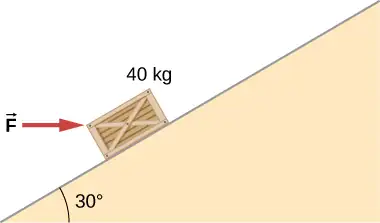
Answer
If crate goes up: a. 3.46 kJ; b. −1.89 kJ; c. −1.57 kJ; d. 0; If crate goes down: a. −0.39 kJ; b. −1.18 kJ; c. 1.57 kJ; d. 0
100. The surface of the preceding problem is modified so that the coefficient of kinetic friction is decreased. The same horizontal force is applied to the crate, and after being pushed 8.0 m, its speed is 5.0 m/s. How much work is now done by the force of friction? Assume that the crate starts at rest.
101. The force F(x) varies with position, as shown below. Find the work done by this force on a particle as it moves from \(x=1.0\:\text{m}\) to \(x=5.0\:\text{m}.\)
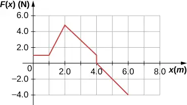
Answer
8.0 J
102. Find the work done by the same force in Example 7.4, between the same points, \(A=(0,0)\:\text{and}\:B=(2\:\text{m},2\:\text{m})\), over a circular arc of radius 2 m, centered at (0, 2 m). Evaluate the path integral using Cartesian coordinates. (Hint: You will probably need to consult a table of integrals.)
103. Answer the preceding problem using polar coordinates.
Answer
35.7 J
104. Find the work done by the same force in Example 7.4, between the same points, \(A=(0,0)\:\text{and}\:B=(2\:\text{m},2\:\text{m})\), over a circular arc of radius 2 m, centered at (2 m, 0). Evaluate the path integral using Cartesian coordinates. (Hint: You will probably need to consult a table of integrals.)
105. Answer the preceding problem using polar coordinates.
Answer
24.3 J
106. Constant power P is delivered to a car of mass m by its engine. Show that if air resistance can be ignored, the distance covered in a time t by the car, starting from rest, is given by \(s={(8P\text{/}9m)}^{1\text{/}2}t^{3\text{/}2}.\)
107. Suppose that the air resistance a car encounters is independent of its speed. When the car travels at 15 m/s, its engine delivers 20 hp to its wheels. (a) What is the power delivered to the wheels when the car travels at 30 m/s? (b) How much energy does the car use in covering 10 km at 15 m/s? At 30 m/s? Assume that the engine is 25% efficient. (c) Answer the same questions if the force of air resistance is proportional to the speed of the automobile. (d) What do these results, plus your experience with gasoline consumption, tell you about air resistance?
Answer
a. 40 hp; b. 39.8 MJ, independent of speed; c. 80 hp, 79.6 MJ at 30 m/s; d. If air resistance is proportional to speed, the car gets about 22 mpg at 34 mph and half that at twice the speed, closer to actual driving experience.
108. Consider a linear spring, as in Figure 7.7(a), with mass M uniformly distributed along its length. The left end of the spring is fixed, but the right end, at the equilibrium position \(x=0,\) is moving with speed v in the x-direction. What is the total kinetic energy of the spring? (Hint: First express the kinetic energy of an infinitesimal element of the spring dm in terms of the total mass, equilibrium length, speed of the right-hand end, and position along the spring; then integrate.)
Adapted from University Physics Volume 1 by OpenStax, licensed under CC BY 4.0. Access the original for free at openstax.org. Changes: converted to the web reading format of The Open Book Project.